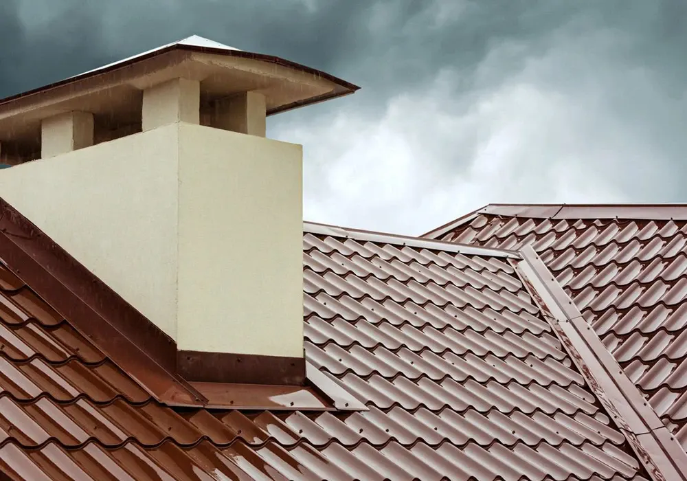

A free roof inspection in Plano TX should end with you knowing exactly what shape your roof is in, and nothing else. We climb up, we photograph what is actually there, we walk you through the pictures, and we leave. No charge, no obligation, and no salesman waiting in the driveway. About half the time we tell homeowners their roof is fine.
Jackson Roofing has been family run in Plano since 2000, and the inspection is where every job we do starts. Book a free, no obligation roof inspection and we will come and look.
What happens during a free roof inspection in Plano?
We inspect the roof from the ground, from the roof surface itself, and from inside the attic, then show you photographs of everything we found.

The visit runs in a fixed order, because doing it the same way every time is how you avoid missing things:
- A walk around the outside. We look at the roof from every angle at ground level, check the soft metal around the house for storm marks, and look for granule grit that has washed down onto the drive or into the beds.
- The roof surface. We get up there and walk it. We feel for soft spots underfoot, check the shingles for cracking, curling, bruising, and bald patches, and look closely at the flashing around chimneys, valleys, and vents.
- Every penetration. Pipe boots, vent collars, satellite mounts, and anything else somebody has put through the roof over the years. This is where most leaks we chase actually begin.
- The attic. Underside of the decking, damp staining, rusty nail points, daylight where there should not be any, and whether the intake and exhaust are moving air the way they should.
- The walkthrough. We come down and show you the photos on the spot, explain what each one means, and tell you what we would do about it if it were our house.
If the roof needs work, you get a written quote and time to think about it. We do not do same day pressure. This page is the Plano version of our main free roof inspection service.
What does a roof inspection cost in Plano?
Nothing. The inspection is free, the photographs are free, and the quote is free, whether or not you ever hire us.
There is no callout fee and no obligation attached to any of it. People ask what the catch is, and the honest answer is that roofs in North Texas need work often enough that being the roofer who told you the truth for free is a reasonable way to earn the job when you eventually need one. About half our inspections end with us saying the roof is fine, which is a terrible sales strategy, and we do it anyway.
When should Plano homeowners get a roof inspection?
Twice a year as a matter of routine, and after any storm that made you look out of the window.
Late winter is the sensible first pass, before spring storm season starts moving across Collin County. Plano is not uniform either. The older streets around Old Town and Douglas Park have mature trees dropping debris into valleys and shading one slope while the other bakes, and the larger cut up rooflines out toward Willow Bend carry more valleys, more flashing, and more places for a leak to start than a simple gable ever will. We look at the two differently for that reason. Early autumn is the second, after our summer has finished working on the shingles. Beyond that:
- After hail or high wind. Wind lifts shingles without removing them, so the roof can look untouched from the street and not be.
- When a ceiling stain appears. Even a faint brown ring means water has already been through.
- Before you buy or sell a house in Plano. Knowing the real condition of the roof beforehand is worth a lot on either side of that conversation.
- When the roof is past fifteen years old. Our heat ages asphalt faster than the rated service life assumes.
- When a storm crew has knocked on your door. A second opinion from somebody local costs you nothing.
If we find damage that needs attention, most of it lands on the roof repair side rather than a full replacement.
What do you look for on a Plano roof?
The things that fail here, which are not quite the same as the things that fail elsewhere.
North Texas roofs age from two directions. Heat dries the asphalt out of the shingles from May through September, and attic temperatures well past 140 degrees work on the underside of the decking at the same time. Then spring hail arrives and finds whatever the heat has already made brittle.
So we look for heat aging first: curling edges, cracking across the shingle face, thin or bald patches where the protective grit has gone. Then storm damage: bruised circles where hail knocked the granules off, creased shingles from wind, dented vent caps and flashing. Then the boring but decisive things, which are the seals, the flashing, and the pipe boots.
When the wear is spread across several slopes and the shingles snap rather than flex, the conversation moves to roof replacement. When it is one leak in one valley, it does not, and we will say so.
Which nearby cities do you cover?
Plano is home. We inspect roofs across North DFW every week: Plano, Frisco, McKinney, Allen, Richardson, Garland, Wylie, Murphy, Rockwall, and Sachse, plus Prosper, Celina, Little Elm, Lucas, Fairview, and Coppell.
If you are somewhere in that spread, we already work your street. Tell us where you are when you get in touch and we will fit you in.
Why Jackson Roofing
We are a family business that has been on Plano roofs since 2000. Our own crews do the work, not a subcontracted team we have never met. Every quote goes to you in writing. There is no same day pressure, ever. When we finish a job we run a magnetic sweep across the yard and the driveway to pick up nails before we leave. And when your roof is fine, we tell you it is fine, which is the whole reason the inspection is worth having.
Frequently asked questions
Is the roof inspection really free in Plano?
Yes. The inspection, the photographs, and the written quote are all free with no obligation. There is no callout fee whether or not you hire us.
How long does a roof inspection take?
Most Plano homes take under an hour, including the attic and the walkthrough of the photos afterwards. A larger or more complex roof takes longer.
Do I need to be home for the inspection?
It is better if you are, because the most useful part is going through the photographs together. We can inspect without you there and send the photos over instead.
Will you tell me if my roof does not need work?
Yes, and it happens on about half our inspections. Telling you the roof is fine costs us a job and keeps us honest, and it is why people call us back years later.
Do you inspect roofs after a hailstorm in Plano?
Yes. Storm damage is a large part of what we look at here, and hail bruising is often invisible from the ground, so a proper look is the only way to know.
Book your free roof inspection
If something looks off up there, or you simply want to know how many years your roof has left, we will come and look. Book a free, no obligation roof inspection anywhere in Plano or the surrounding North DFW towns. We look, we show you the photos, and we give you a straight answer. No pressure, just an honest look.